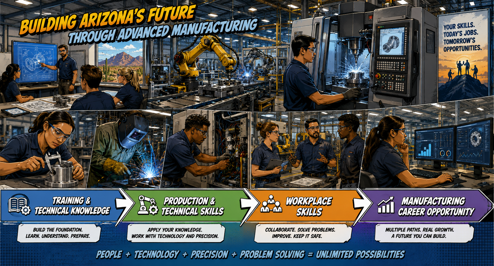

Built from what manufacturing employers are asking for
The skill cards below are based on recent Manufacturing & Production job postings across Pinal, Maricopa, and Pima Counties. They reflect skills employers are actively requesting — not a list BOOST invented.

Source: Lightcast Q3 2026 • Active Manufacturing & Production job postings • Pinal, Maricopa & Pima Counties • Jun 2025–Jul 2026.
How well do you think Advanced Manufacturing fits you?
1 means not a fit. 5 means strong fit. We will ask again after you experience the work.
You explored what employers are asking for.
Now you'll face 8 real-world manufacturing situations. There may not always be one obvious answer. Look at what's happening, decide what matters most, and choose what you would actually do.
You experienced the work.
Next, tell us what tools, technologies, and technical environments you've already encountered.
Technical Exposure
This is not a competency test. Experience can come from work, school, training, military service, hobbies, home projects, or other settings.
How well do these manufacturing workplace situations fit you?
What did the experience tell you?
Skills Explored
Workplace Judgment
Technical Exposure
What Changed?
Where Your Responses Stood Out
What This Means
Important: This is a career-alignment learning activity, not a hiring assessment, certification exam, or determination that you are qualified to perform manufacturing duties.